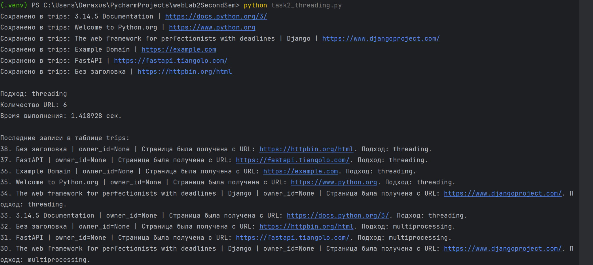
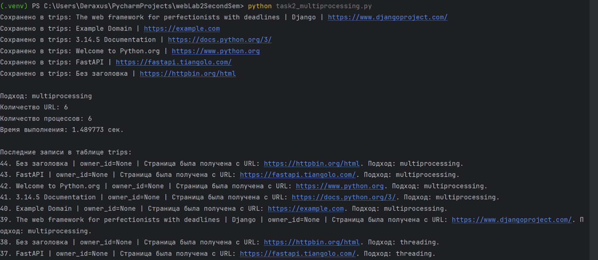
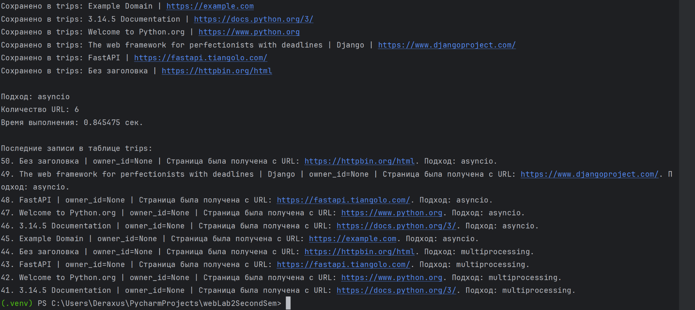
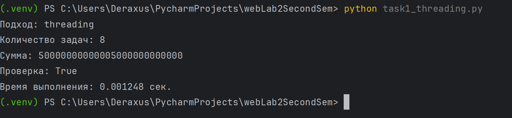
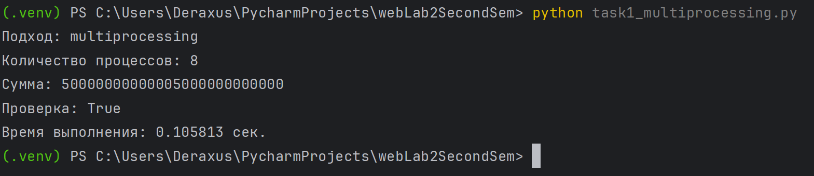
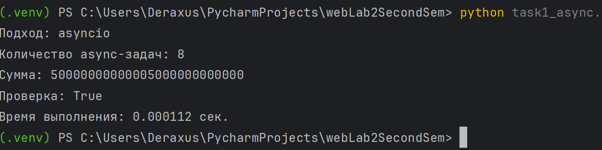
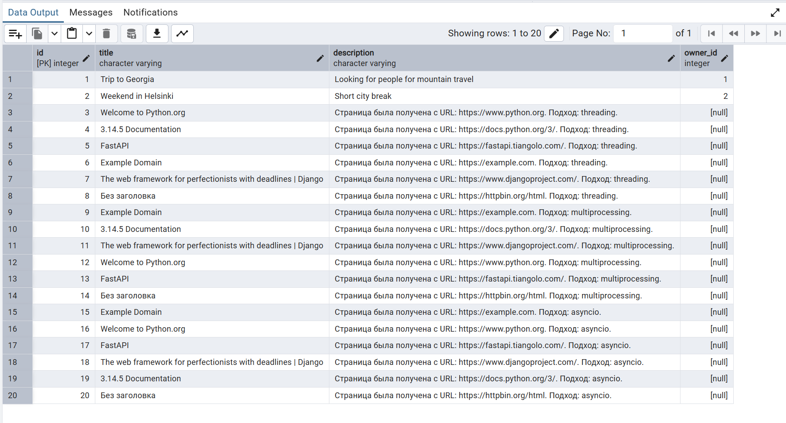

Лабораторная работа №2
Потоки. Процессы. Асинхронность
Цель работы
Цель работы — изучить особенности потоков, процессов и асинхронного программирования в Python, а также сравнить эффективность подходов threading, multiprocessing и asyncio на разных типах задач.
Задача 1. Вычисление суммы чисел
В первой задаче необходимо было реализовать вычисление суммы всех чисел от 1 до 10 000 000 000 000 с использованием трех подходов:
threading;multiprocessing;asyncio.
Задача была разделена на несколько диапазонов. Каждый поток, процесс или асинхронная задача вычисляли сумму своего диапазона, после чего результаты объединялись.
Для вычисления суммы диапазона использовалась формула арифметической прогрессии:
sum = (start + end) * count / 2
Такой подход позволяет быстро получить результат без перебора всех чисел циклом.
Результаты выполнения задачи 1
| Программа | Время выполнения, сек |
|---|---|
| task1_threading.py | 0.001248 |
| task1_multiprocessing.py | 0.105813 |
| task1_async.py | 0.000112 |
Выполнение task1_threading.py

Выполнение task1_multiprocessing.py

Выполнение task1_async.py

Задача 2. Параллельный парсинг веб-страниц
Во второй задаче необходимо было реализовать параллельную загрузку нескольких веб-страниц, получить заголовок каждой страницы и сохранить результат в базу данных PostgreSQL.
Данные сохранялись в таблицу trips, которая была создана в рамках предыдущей лабораторной работы.
Для парсинга использовались следующие подходы:
threading— несколько потоков выполняют HTTP-запросы параллельно;multiprocessing— несколько процессов независимо обрабатывают URL;asyncioиaiohttp— асинхронная загрузка страниц без создания отдельных потоков для каждого запроса.
Результаты выполнения задачи 2
| Программа | Время выполнения, сек |
|---|---|
| task2_threading.py | 1.418928 |
| task2_multiprocessing.py | 1.489773 |
| task2_async.py | 0.845475 |
Выполнение task2_threading.py

Выполнение task2_multiprocessing.py

Выполнение task2_async.py

PostgreSQL таблица trips
После выполнения программ данные были успешно сохранены в таблицу trips.

Анализ результатов
В первой задаче все программы выполнились очень быстро, потому что сумма диапазонов вычислялась по формуле арифметической прогрессии, а не через последовательный перебор всех чисел.
Самым медленным оказался вариант с multiprocessing, так как создание процессов имеет дополнительные накладные расходы. В данной задаче сами вычисления слишком короткие, поэтому преимущества процессов не проявились.
Вариант с threading также выполнился быстро, но для настоящих CPU-bound задач потоки в Python обычно не дают значительного ускорения из-за GIL.
Вариант с asyncio показал минимальное время, но это связано с тем, что внутри задачи нет реального ожидания ввода-вывода. Асинхронность лучше подходит не для тяжелых вычислений, а для задач, где программа часто ожидает внешние ресурсы.
Во второй задаче лучший результат показал asyncio, так как парсинг веб-страниц является I/O-bound задачей. При загрузке страниц программа большую часть времени ожидает ответы от серверов, и асинхронный подход позволяет эффективно выполнять несколько запросов одновременно.
threading также подходит для сетевых операций, но требует создания потоков. multiprocessing в данной задаче оказался менее выгодным, потому что создание отдельных процессов дает лишние накладные расходы для сравнительно небольшой сетевой задачи.
Вывод
В ходе лабораторной работы были реализованы три подхода к параллельному и асинхронному выполнению задач в Python:
threading;multiprocessing;asyncio.
Было установлено, что:
multiprocessingлучше подходит для тяжелых вычислительных задач;threadingможно использовать для задач ввода-вывода;asyncioнаиболее эффективно подходит для большого количества сетевых запросов;- выбор подхода зависит от типа задачи: CPU-bound или I/O-bound.
Все программы были успешно запущены, результаты были выведены в консоль, а данные из задачи 2 сохранены в базу данных PostgreSQL.